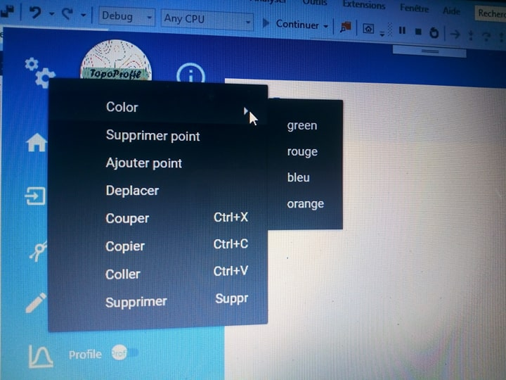

| bouton |
capture |
fonctionnalité |
| Acceuil |

|
permet d'aller à la première page où vous pouvez générer un nouvau projet |
| importer |
 |
vous permet d'ouvrir une carte à partir d'un fichier puis entrer les informations nécessaires reliées à la carte: Echelle de la carte(entier),unité du graphe (texte),uniteAlt(texte), le min et le max:(entier) . chaque erreur de saisie va générer un message d'erreur qui vous permet de rentrer les données pour une autre fois. |
| tracer courbe |
 |
vous permet de dessiner des courbes à travers des points, des segments.pour commencer il suffit d'activer le toggle boutton à coté de tracer courbe dans la barre de menu puis aller sur la page de travail, fait un clique gauche afin de dessiner le premier point puis mettez les points dans le lieu où vous voulez et à chaque fois que vous voulez fixer le points faites un clique gauche. et pour terminer faite une clique droite et entrez l'altitude de la courbe dessinée. |
| tracer segment |
 |
vous permet de tracer un segment. pour commencer cliquez sur tracer segment dans la barre de menu, puis allez sur l'espace de travail, dessinez le premier point où vous voulez, une ligne appairetra, et enfin choisissez le lieu du 2ème point et fixez le avec une clique gauche. vous pouvez dessiner le segment qu'une seule fois sinon , une message d'erreur s'affichera. |
| profil |
 |
ce bouton permet de tracer un profil topographique à partir les points d'intersection déterminer, et au meme temps vous pouvez selectionner des pentes et les afficher. pour tracer le profil , il faut d'abord dessiner les courbes et le segment et apparaitre les point d'intersection.puis allez sur la barre de menu activer le toggle boutoon à coté du profil. pour modifier les résultats , cliquez sur le bouton paramètre en haut, vous pouvez changer la couleur du fond, du graphe , les dimensions puis cliquez dur ok. vous pouvez aussi faire le zoom en arrière et en avant. et il ya un bouton imprimer aussi pour imprimer le travail. pour afficher la pente, cliquez sur la pente que vous voulez dans le graphe, et les résultats s'afficheront. |
| intersection |
 |
ce bouton permet de déterminer les points d'intersections des courbes avec le segment. pour cela il suffit d'acctiver le toggle boutton à coté du intersection dans la barre de menu. |
| sauvegarder |
 |
permet de sauvegarder le profil réalisé dans l'emplacement ou vous voulez, cliquez sur le bouton sauvegarder en haut, une fenetre apparaitera, choissisez le lieu, le nom puis cliquez sur enregistrer. |
| ouvrir |
 |
permet d'ouvrir les profils réalisés avant, il suffit de choisis l'emplacement et le nom puis cliquez sur ouvrir. |
| imprimer |
 |
permet d'imprimer votre travail à travers votre imprimantes avec le nombre de copies et le format que vous voulez(image, texte, dimensions personnalisées). pour imprimer les courbes avec la carte et les points d'intersections cliquez sur l'icone imprimer en haut, et pour imprimer le profil cliquez sur l'icone imprimez dans la fenetre du profil |
| sortir |
 |
permet de sortir de votre application |
| paramètre |
 |
Elle contient plusieurs fonctionnalités:
-changer le background de l'application: clique sur bouton paramètre puis bouton color,puis choissiez la couleur désirée.
-ajouter point: qui permet d'ajouter un point dans la courbe.
-supprimerpoint qui permet de supprimer un point dans la courbe.
-un bouton déplacer: qui permer de déplacer la courbe.
-un bouton copier: copier le travail.
-bouton coller: coller le travail .
-un bouton couper.
-un bouton supprimer: pour supprimer la courbe et le segment.
|
| help |
 |
afficher une page d'aide de l'application |
| zoom |
 |
topoProfil permet de faire un zoom avant ou arrière, pour cela glisser la barre de zoom |
| modifier |
|
pour modifier un point du courbe, désactiver le toggle bouton dessiner. séléctionnez la courbe, des points rouges s'afficheront. choisissez le point que vous voulez, faites un double clique gauche et après bougez le ou vous voulez, pour le fixer , faites clique gauche. et à chaque fois que vous modifier le point, les points d'intersections de changent. |
| Colorer |
|
pour changer le background de l'application, cliquez sur paramètre, puis sur colorer, puis sur la couleur désirée/td>
|
| ajouter point |
|
pour ajouter un point, désactiver le toggle bouton dessiner. séléctionnez le segment où vous voulez faire lajout, des points rouges s'afficheront.allez sur paramètre cliquez sur ajouter point, puis revenir dans l'espace du travail et choisissez l'emplacement sois au dessus ou bien ou dessous ou bien sur le segment séléctioné avant et fait une clique gauche. |
| supprimer point |
|
pour supprimer un point, désactiver le toggle bouton dessiner. sélectionnez la coubre, faites une clique gauche sur le point que vous voulez supprimer, allez sur paramètre puis cliquer sur supprimer. |
| déplacer |
|
pour déplacer une courbe , désactiver le toggle bouton dessiner. sélectionnez la coubre, allez sur paramètre puis cliquer sur déplacer. choisissez un nouvelle emplacement et pour le fixer: faite un clique gauche puis droite. |
| supprimer |
|
permet de supprimer une courbe et un segment.pour supprimer une courbe ou bien segment, désactiver le toggle boutton dessiner. sélectionnez la coubre ou bien le segment que vous voulez les supprimer.allez sur paramètre et faites une clique gauche sur supprimer/td>
|
| Copier |
|
pour copier une courbe séléctionnée. vous pouvez aussi utiliser les raccourci clavier Ctrl+C |
| Coller |
|
pour coller une courbe séléctionnée. vous pouvez aussi utiliser les raccourci clavier Ctrl+V |
| Couper |
|
pour couper une courbe séléctionnée. vous pouvez aussi utiliser les raccourci clavier Ctrl+X |
| Menu |
 |
affiche le menu de TopoProfil, les fonctioonalités accessibles à partir de ce menu |
| Maximiser |
 |
permet d'agrandir et de minimiser l'application |
| Minimiser |
 |
mettre l'application vers le bout(dans la barre des taches). |